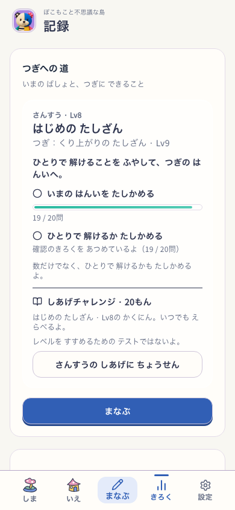
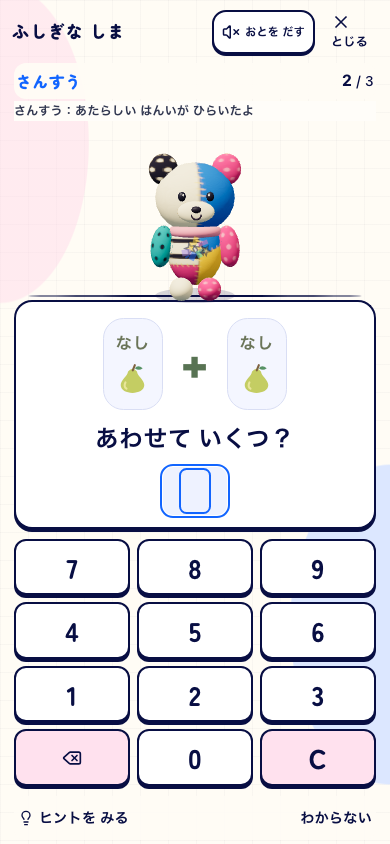
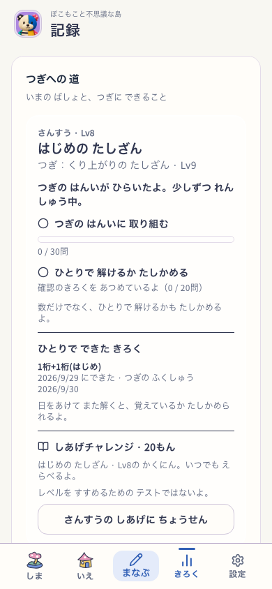
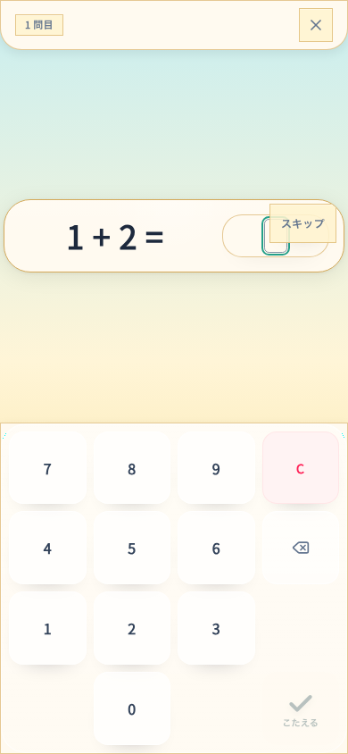
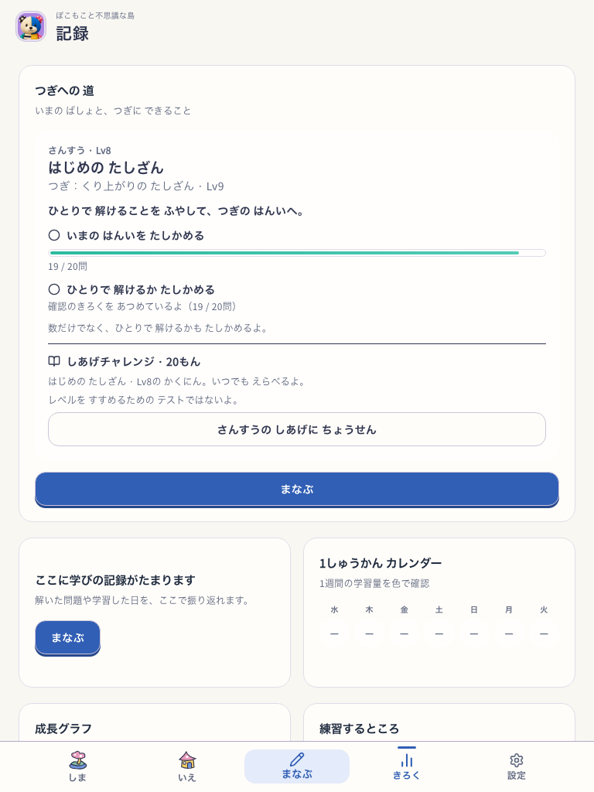
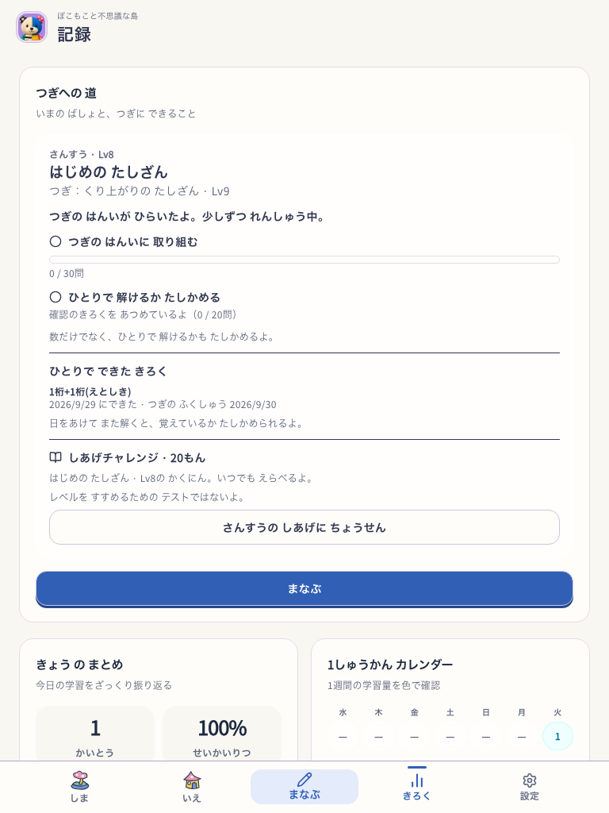

学習の現在地と次の目標
2026-09-29 · ローカル実装。公開・実機・子どもの評価は未実施。
Island / Life有効、学習候補 pokomoko-pop-live-v8。解放直前の明示プロフィールfixtureから実出題・実回答・正式保存を通した検査。音OFF、768幅はreduced motion。
Git基点 44d5c4eb390a4ee642b31f8c14d9f521832e2db9
固定入力 93a9fd17de715b709dc85da9d1479633fc585fc3fd3a63466faa4cca3b2e0e4d
実行記録 · ビルド情報

390px · 学習前の記録
390px · 保存後の解放通知
390px · 戻った記録
390px · 任意の確認テスト
768px · 学習前の記録 768px · 保存後の解放通知
768px · 保存後の解放通知
768px · 戻った記録 768px · 任意の確認テスト
768px · 任意の確認テスト